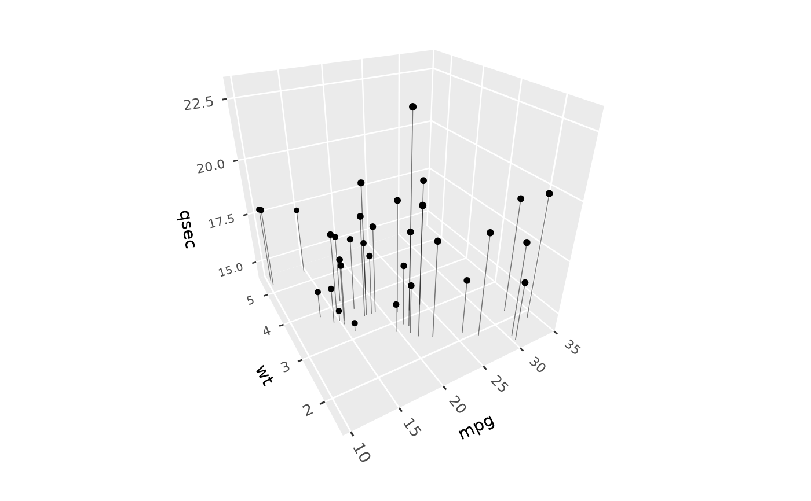
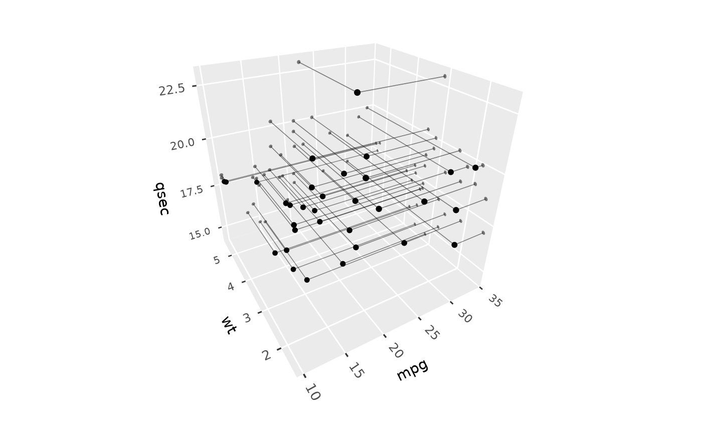
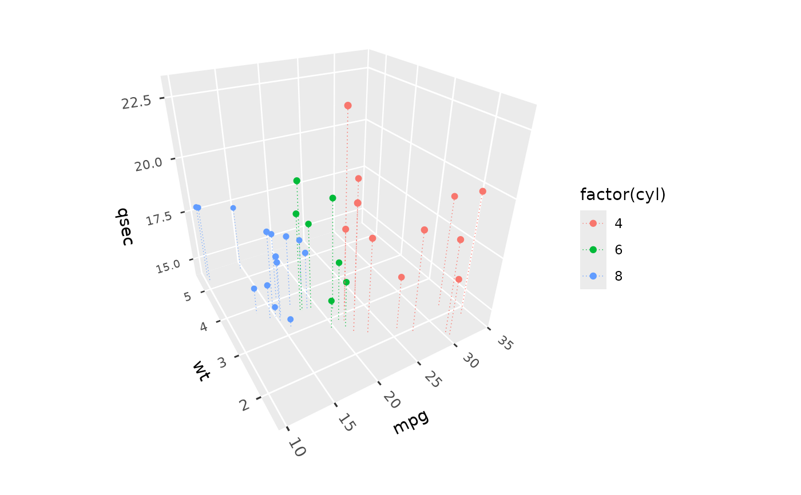

geom_dropline_3d() draws a line from each point to its projection on one
or more faces of the panel, such as the floor, to help show where points
lie in 3D. Use it alongside geom_point_3d(), and with
position_on_face() to also mark where the points fall on the faces.
Usage
geom_dropline_3d(
mapping = NULL,
data = NULL,
stat = StatIdentity3D,
position = "identity",
...,
faces = "zmin",
scale_depth = TRUE,
on_top = FALSE,
na.rm = FALSE,
show.legend = NA,
inherit.aes = TRUE
)Arguments
- mapping
Set of aesthetic mappings created by
aes().- data
The data to be displayed in this layer.
- stat
The statistical transformation to use on the data. Defaults to
stat_identity_3d().- position
Position adjustment, defaults to
"identity".- ...
Other arguments passed on to
layer(), such as aesthetics likecolour,linewidth,linetype, andalpha.- faces
Faces to draw lines to: one or more of
"xmin","xmax","ymin","ymax","zmin"(the default), and"zmax".- scale_depth
Controls depth-based scaling, drawing closer elements larger or thicker and farther ones smaller or thinner.
TRUE(the default) applies full scaling andFALSEdisables it; a number sets the strength directly, where1matchesTRUE,0matchesFALSE, values below 1 subdue the effect and values above 1 exaggerate it. This affects the layer only; usecoord_3d(scale_depth = )for panel and axis components.- on_top
If
TRUE, the layer is drawn on top of the rest of the scene instead of being depth-sorted with it, so other geometry never hides or cuts it, e.g. to keep labels legible. The layers drawn on top are depth-sorted among themselves. DefaultFALSE.- na.rm
If
FALSE, missing values are removed with a warning.- show.legend
Logical indicating whether this layer should be included in legends.
- inherit.aes
If
FALSE, overrides the default aesthetics.
Details
Faces are the faces of the panel's cube, so a drop line to "zmin" ends on
the floor of the panel wherever the axis limits put it. Drop lines are
depth-sorted with the rest of the scene, and split where they pass through
polygons.
Aesthetics
geom_dropline_3d() understands the following aesthetics (required in
bold): x, y, z, colour, linewidth (default 0.25),
linetype, and alpha (default 0.5).
Examples
p <- ggplot(mtcars, aes(mpg, wt, qsec)) + coord_3d()
# Drop lines to the floor
p + geom_dropline_3d() + geom_point_3d()

# Drop lines to two side faces, ending in flat markers on those faces
p + geom_dropline_3d(faces = c("xmax", "ymax")) +
geom_point_3d(position = position_on_face(c("xmax", "ymax")),
flat = TRUE, alpha = .5) +
geom_point_3d()

# Styled, with colour mapped
p + geom_dropline_3d(aes(colour = factor(cyl)), linetype = "dotted", alpha = 1) +
geom_point_3d(aes(colour = factor(cyl)))
